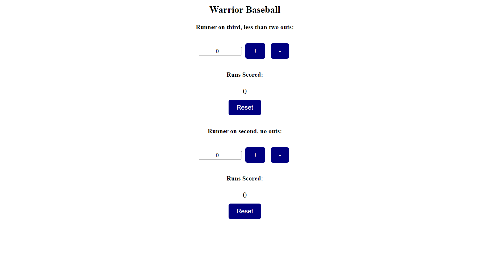

Virtual reality / senior design
Identify, Isolate, and Inform
An immersive training experience designed to help medical professionals practice infectious-disease response.
Read the case study →Software Development & Analytics
I’m a software engineer at Sandhills Global with a strong interest in analytical insights, data discoveries, and the questions that lead to informed decisions.

What’s this all mean?
I started programming just over seven years ago, building a technical foundation across languages, systems, and software projects. I also minored in Engineering Leadership, which has shaped how I approach development, collaboration, and analytical work: stay curious, follow the evidence, and make the result useful.
Baseball has always been a connector for me. It links the way I think about statistics and patterns with the way I work with people, solve problems, and keep learning.
More about me →
Virtual reality / senior design
An immersive training experience designed to help medical professionals practice infectious-disease response.
Read the case study →
Automation / internship
A focused internal tool that replaced repetitive manual weigh-up sheet work with a faster, more reliable workflow.
Open on GitHub ↗
Data / personal project
A small web app for turning game-by-game coaching observations into useful team context.
Open on GitHub ↗